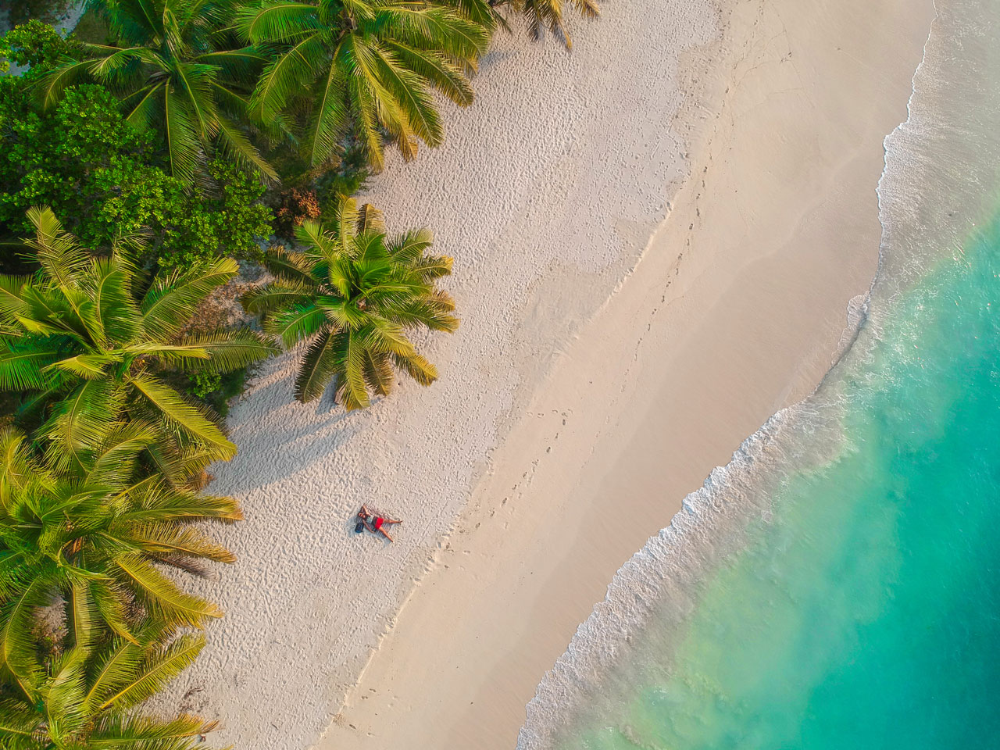
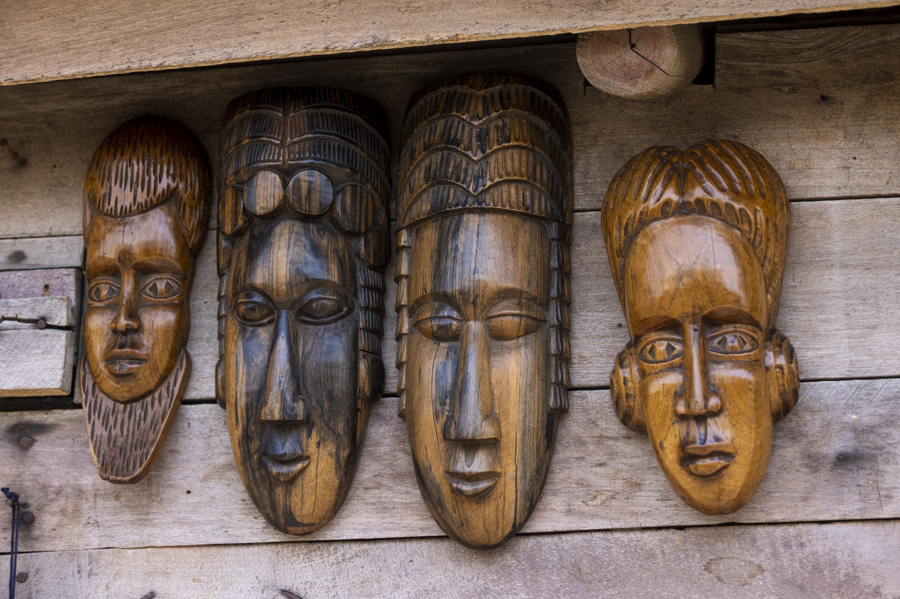
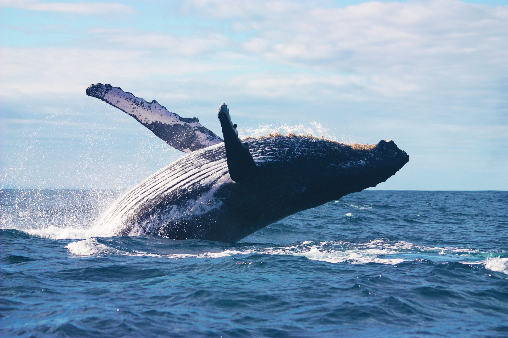

Des itinéraires uniques pour explorer l'Île Rouge

Exploration des formations calcaires uniques des Tsingy et de l'emblématique allée des baobabs. Un voyage au cœur des paysages les plus spectaculaires de Madagascar.
Randonnée immersive dans le parc national de Ranomafana à la rencontre des lémuriens. Nuitée en lodge écologique au cœur de la forêt tropicale.


Séjour balnéaire de luxe dans l'archipel de Nosy Be. Plages paradisiaques, snorkeling, et découverte des îles aux tortues et de Nosy Komba.
Expédition au cœur du massif d'Andringitra, avec l'ascension du Pic Boby (2658m). Pour randonneurs confirmés en quête de défis.


Immersion dans la culture malgache à travers les marchés, villages traditionnels et ateliers d'artisanat. Rencontres authentiques garanties.
De juillet à septembre, assistez au spectacle grandiose des baleines à bosse dans le canal de Mozambique. Excursions en bateau et plages préservées.

Nos experts créent l'itinéraire parfait selon vos envies, votre budget et votre rythme.
Demander un devis personnalisé